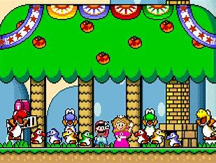

About
Legacy and Impact
Super Mario World's innovative gameplay mechanics, such as Yoshi's abilities and the cape power-up, raised the bar for platformers. Many subsequent platformers, inclujdoing Yoshi's island and Donkey Kong Country, drew inspiration from Super Mario World's creative level design and charming graphics.
Super Mario World's success also helped establish the Super Nintendo Entertainment system (SNES) as a major player in the gaming industry. The game's popularity also cemented Mario's status as Nintendo's mascot and paved the way for future Mario games.
This game has had a lasting impact on popular culture. The game's iconic, characters, and levels have been referenced and parodied in countless forms of media, from tv shows and movies to music and art.
Accolades
Super Mario World has received widespread critical acclaim and has been on numerous "best games of all time" lists. The game has also been re-released on multiple occasions, including as part of the Super Mario All-Stars collection and on the virtual console.
Fun Facts
Fun fact 1
Super Mario World was originally designed to be a launch title for the SNES, but itr was delayed to ensure the game met Nintendo's high standards.
Fun fact 2
The game's iconic music was composed by Koji Kondo, who also composed music for other classic Nintendo games, including The Legend of Zelda and Super Mario Bros.
Here's a list of my favorite soundtracks from this game that I sometimes use to study that you can find on You Tube.
- Super Mario World Music - Opening title
- Super Mario World Music - Map 2: overworld
- Super Mario World Music - Map 4: Star Road
- Super Mario World Music - Overworld
- Super Mario World Muisc - Sub Castle
Fun fact 3
Super Mario World has been re-released on several occasions, including as part of the Super Mario All-Stars collection and on the Virtual Console.